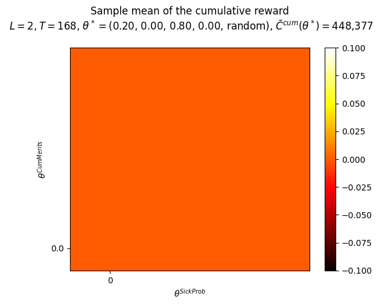
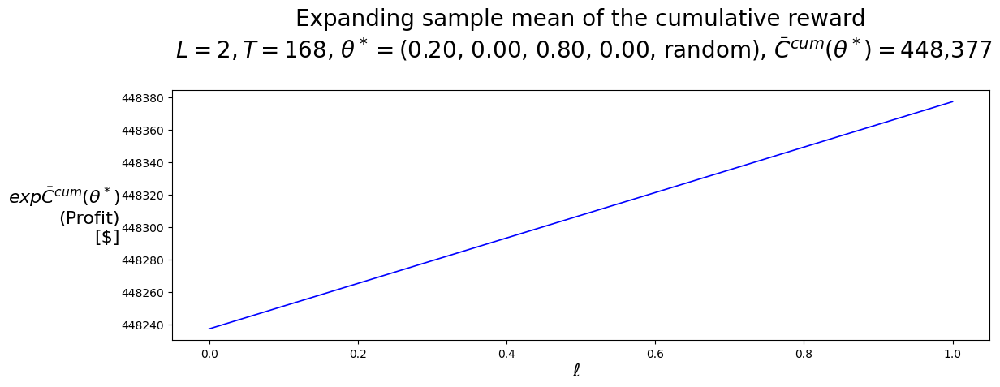
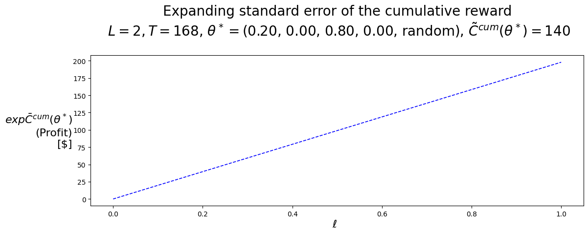
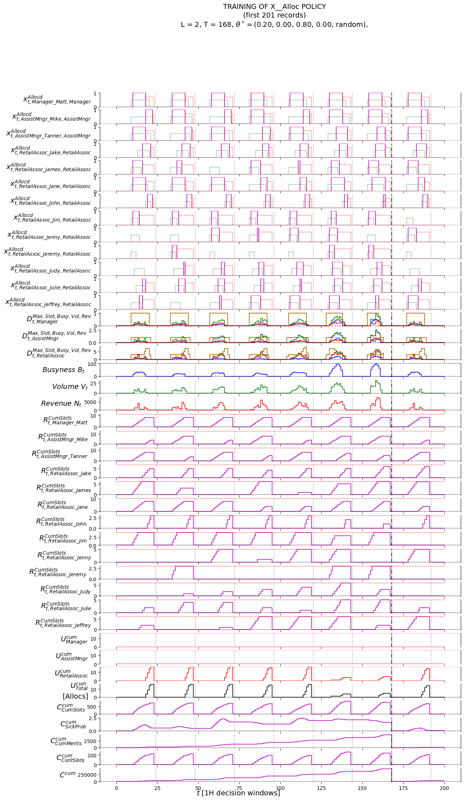
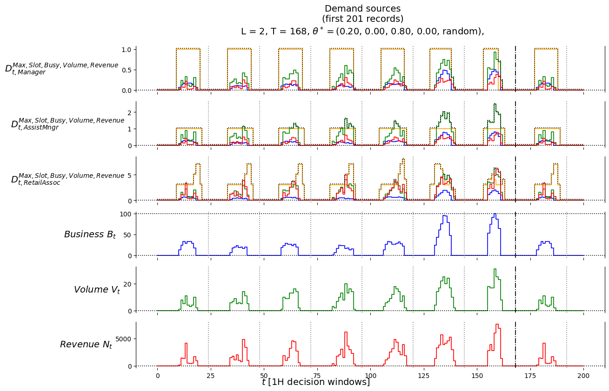
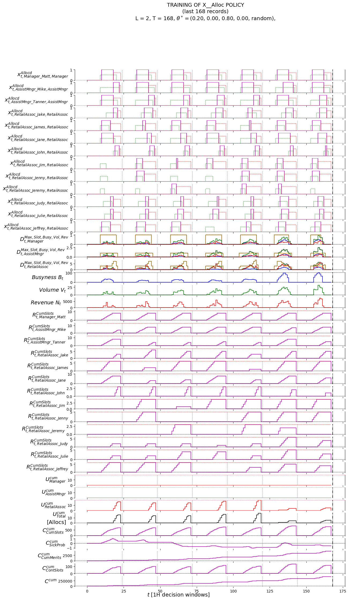
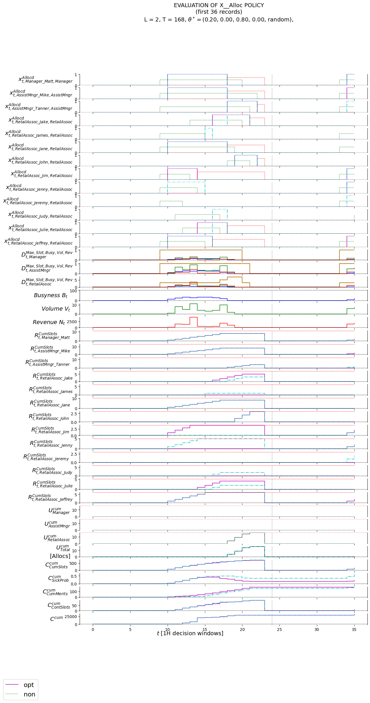
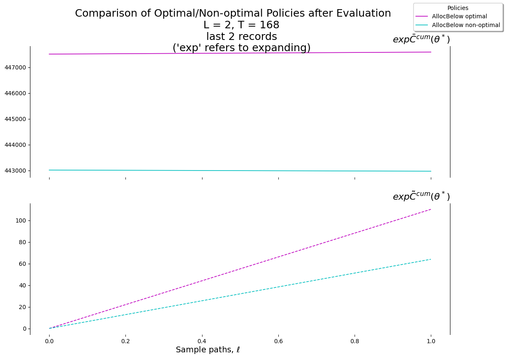
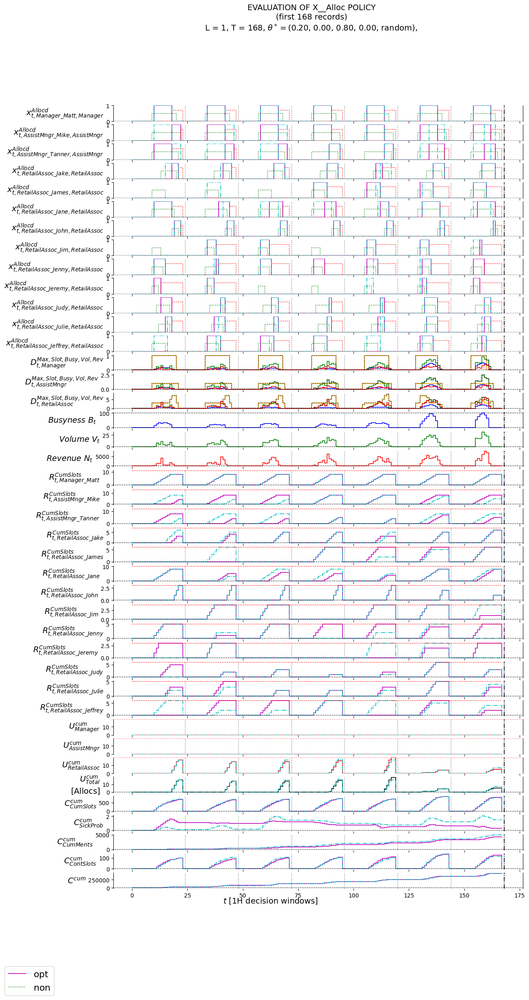

# Set up autoreloadcore
Contains the main flow. Original single notebook broken up into about 10 notebooks, each of which becomes a python model.
!which python/Users/kobus/AIShiftScheduler_KE5/.venv/bin/python!python --versionPython 3.10.0np.__version__, pd.__version__, mpl.__version__, ray.__version__, json.__version__('1.24.4', '2.0.3', '3.7.4', '2.8.1', '2.0.9')# !pip freeze | grep pandas
# !pip freeze|grep openpyxl
# !pip freeze# !pip install -U ray==2.8.1
# !pip install openpyxl# check some configcf.SICK_PROBS.head()| ResourceId | January | February | March | April | May | June | July | August | September | October | November | December | |
|---|---|---|---|---|---|---|---|---|---|---|---|---|---|
| 0 | 1 | 0.0300 | 0.0300 | 0.0100 | 0.0200 | 0.0200 | 0.0900 | 0.0200 | 0.0100 | 0.0100 | 0.0000 | 0.0000 | 0.0300 |
| 1 | 2 | 0.1000 | 0.0300 | 0.1000 | 0.0800 | 0.0100 | 0.0600 | 0.0600 | 0.0900 | 0.0700 | 0.0300 | 0.0200 | 0.1000 |
| 2 | 3 | 0.1300 | 0.0100 | 0.0300 | 0.0300 | 0.0300 | 0.0200 | 0.0200 | 0.0900 | 0.0000 | 0.0200 | 0.0300 | 0.0500 |
| 3 | 4 | 0.0900 | 0.0800 | 0.0100 | 0.0200 | 0.0700 | 0.0800 | 0.0300 | 0.0400 | 0.0700 | 0.0200 | 0.0300 | 0.0900 |
| 4 | 5 | 0.0200 | 0.0200 | 0.0900 | 0.0900 | 0.0900 | 0.0400 | 0.0300 | 0.0500 | 0.0200 | 0.1000 | 0.1100 | 0.0700 |
cf.MERIT_PROBS.head()| ResourceId | MeritProb | DemeritProb | |
|---|---|---|---|
| 0 | 1 | 0.0100 | 0.0400 |
| 1 | 2 | 0.2000 | 0.0900 |
| 2 | 3 | 0.3000 | 0.0300 |
| 3 | 4 | 0.2000 | 0.1500 |
| 4 | 5 | 0.0500 | 0.0200 |
cf.EXOG_INFO.head()| Date | DOW | DOW_name | QOD | HOD | BOD | A_0 | A_1 | A_2 | A_3 | A_4 | A_5 | A_6 | A_7 | A_8 | A_9 | A_10 | A_11 | A_12 | D_0 | D_1 | D_2 | M_0 | M_1 | M_2 | M_3 | M_4 | M_5 | M_6 | M_7 | M_8 | M_9 | M_10 | M_11 | M_12 | busyness | volume | revenue | |
|---|---|---|---|---|---|---|---|---|---|---|---|---|---|---|---|---|---|---|---|---|---|---|---|---|---|---|---|---|---|---|---|---|---|---|---|---|---|---|
| 0 | 2023-12-04 00:00:00 | 0 | 2023-12-04 00:00:00 | 0 | 0 | 0 | 0 | 0 | 0 | 0 | 0 | 0 | 0 | 0 | 0 | 0 | 0 | 0 | 0 | 0 | 0 | 0 | 0 | 1 | 0 | 0 | 1 | 0 | 0 | 0 | 0 | 0 | 0 | 0 | 0 | 0 | 0 | 0.0000 |
| 1 | 2023-12-04 00:15:00 | 0 | 2023-12-04 00:15:00 | 1 | 0 | 0 | 0 | 0 | 0 | 0 | 0 | 0 | 0 | 0 | 0 | 0 | 0 | 0 | 0 | 0 | 0 | 0 | 0 | 0 | 1 | 0 | 0 | 0 | 1 | 0 | 0 | -1 | 1 | 0 | 0 | 0 | NaN | NaN |
| 2 | 2023-12-04 00:30:00 | 0 | 2023-12-04 00:30:00 | 2 | 0 | 0 | 0 | 0 | 0 | 0 | 0 | 0 | 0 | 0 | 0 | 0 | 0 | 0 | 0 | 0 | 0 | 0 | 0 | 0 | 0 | -1 | 0 | 0 | 0 | 1 | -1 | 0 | 0 | -1 | -1 | 0 | NaN | NaN |
| 3 | 2023-12-04 00:45:00 | 0 | 2023-12-04 00:45:00 | 3 | 0 | 0 | 0 | 0 | 0 | 0 | 0 | 0 | 0 | 0 | 0 | 0 | 0 | 0 | 0 | 0 | 0 | 0 | 0 | 1 | 0 | -1 | 0 | 0 | 0 | 0 | -1 | 0 | 0 | -1 | -1 | 0 | NaN | NaN |
| 4 | 2023-12-04 01:00:00 | 0 | 2023-12-04 01:00:00 | 4 | 1 | 0 | 0 | 0 | 0 | 0 | 0 | 0 | 0 | 0 | 0 | 0 | 0 | 0 | 0 | 0 | 0 | 0 | 0 | 0 | 0 | -1 | 0 | 0 | 0 | 0 | -1 | 0 | 0 | -1 | -1 | 0 | 0 | 0.0000 |
cf.MODES['TRAIN', 'EVALU']cf.MAX_RESOURCE_TYPES3cf.MAX_RESOURCE_IDS13cf.aNAMES['Manager_Matt',
'AssistMngr_Mike',
'AssistMngr_Tanner',
'RetailAssoc_Jake',
'RetailAssoc_James',
'RetailAssoc_Jane',
'RetailAssoc_John',
'RetailAssoc_Jim',
'RetailAssoc_Jenny',
'RetailAssoc_Jeremy',
'RetailAssoc_Judy',
'RetailAssoc_Julie',
'RetailAssoc_Jeffrey']cf.bNAMES['Manager', 'AssistMngr', 'RetailAssoc']cf.abNAMES['Manager_Matt___Manager',
'AssistMngr_Mike___AssistMngr',
'AssistMngr_Tanner___AssistMngr',
'RetailAssoc_Jake___RetailAssoc',
'RetailAssoc_James___RetailAssoc',
'RetailAssoc_Jane___RetailAssoc',
'RetailAssoc_John___RetailAssoc',
'RetailAssoc_Jim___RetailAssoc',
'RetailAssoc_Jenny___RetailAssoc',
'RetailAssoc_Jeremy___RetailAssoc',
'RetailAssoc_Judy___RetailAssoc',
'RetailAssoc_Julie___RetailAssoc',
'RetailAssoc_Jeffrey___RetailAssoc']4.3.6 Implementation of the System Under Steer (SUS) Model
See
modelmodule
4.6 Policy Evaluation
4.6.1 Training/Tuning
# # hide
# # QUICK STEP
# def print_S_t():
# print(f'M.S_t["R_t"]=\n{M.S_t["R_t"]}')
# print(f'M.S_t["D_t"]=\n{M.S_t["D_t"]}')
# def print_x_t():
# # print(f'x_t.x_t= {x_t.x_t}')
# print(f'M.x_t["xAlloc_t"]=\n{M.x_t["xAlloc_t"]}')
# record = []
# l = 1
# M = Model()
# P = Policy(M)
# ## DEM = DemandSimulator(seed=SEED_TRAIN); print(f'{DEM.simulate()=}')
# ## MER = MeritSimulator(seed=SEED_TRAIN); print(f'{MER.simulate()=}')
# theta_test = P.build_theta({
# 'thCumSlots': .1,
# 'thSickProb': .3,
# 'thCumMerits': .2,
# 'thContSlots': 1 - (.6),
# 'thSelect': 'random'
# })
# record_l = [cf.piNAMES[0], theta_test, l]; print(f'{record_l=}')
# print_S_t()
# print_x_t()# ## hide
# # T = 7*24
# # T = 2*24
# T = 2
# # T = 1*SLOTS_PER_DAY
# # T = 2*SLOTS_PER_DAY
# dt = pd.to_datetime(cf.START_DATE_TIME)
# dt_delta = pd.Timedelta(cf.DATE_TIME_DELTA)
# for t in range(T):
# print(f'\n################# t={t}, dt={dt} #################')
# # getattr(P, 'X__AllocBelow')(t, M.S_t, M.x_t, theta_test); #print(f'{x_t=}')
# getattr(P, 'X__Alloc')(t, dt, M.S_t, M.x_t, theta_test); #print(f'{x_t=}')
# print_S_t()
# print_x_t()
# # record_t = M.step(t, theta_test)
# record_t = M.step(t, dt, theta_test)
# print(f'\nAFTER STEP:')
# record.append(record_l + record_t); #print(f'{record=}')
# dt = dt + dt_delta
# # print_S_t()
# # print(f'{M.Ccum=}')# ## hide
# df_test_n_t = pd.DataFrame.from_records(record, columns=Labels)
# df_test_n_t.tail()# ## hide
# V.plot_records(
# df=df_test_n_t,
# df_non=None,
# pars=defaultdict(str, {
# # 'thetaAdj1': {a1n: theta_test.thAdj1[a1n] for a1n in a1NAMES},
# # 'thetaAdj3': {a1n: theta_test.thAdj3[a1n] for a1n in a1NAMES},
# # 'suptitle': f'TRAINING OF X__AdjBelow POLICY'+'\n'+f'(first {first_n_t} records)'+'\n'+ \
# # f'L = {L}, T = {T}, '+ \
# # r'$\theta^*=$'+f'{P.round_theta(best_theta_AdjBelow)}',
# 'T': T
# }),
# )if 'TRAIN' in cf.MODES: print(Best_theta_Alloc)Theta(thCumSlots=0.2, thSickProb=0, thCumMerits=0.8, thContSlots=0.0, thSelect='random')## TRAIN ENTRY-POINT
## @anvil.server.callable
# def get_schedule(start, slots_per_day, max_daily_slot_run, resources, demands_per_busyness, resource_expenses):
# def get_schedule(
def train_schedule(
start,
slots_per_day,
max_daily_slot_run,
resources,
demands_per_busyness,
demands_per_volume,
demands_per_revenue,
resource_expenses):
pass## P.plot_Fhat_map_5(
V.plot_Fhat_map_4(
FhatI_theta_I=Cbarcum_Alloc,
## thetasX=thetasCumSlots,
thetasX=ThetasSickProb,
thetasY=ThetasCumMerits,
## labelX=r'$\theta^{CumSlots}$',
labelX=r'$\theta^{SickProb}$',
labelY=r'$\theta^{CumMerits}$',
title="Sample mean of the cumulative reward"+f"\n $L={L}, T={T}$, "+ \
r"$\theta^* =$("+ \
str(f'{Best_theta_Alloc[0]:,.2f}')+", "+ \
str(f'{Best_theta_Alloc[1]:,.2f}')+", "+ \
str(f'{Best_theta_Alloc[2]:,.2f}')+", "+ \
str(f'{Best_theta_Alloc[3]:,.2f}')+", "+ \
f'{Best_theta_Alloc[4]}'+"), " \
r"$\bar{C}^{cum}(\theta^*) =$"+f"{Best_Cbarcum_Alloc:,.0f}\n",
## thetaFixed1=best_theta_Alloc.thCumMerits,
## thetaFixed1=best_theta_Alloc.thSickProb,
## thetaFixed1=best_theta_Alloc.thCumSlots,
thetaFixed1=Best_theta_Alloc.thContSlots,
thetaFixed2=Best_theta_Alloc.thSelect,
)
TrueV.plot_expFhat_chart(
df=ThetaStar_expCbarcum_Alloc,
labelX=r'$\ell$',
labelY=r"$exp\bar{C}^{cum}(\theta^*)$"+"\n(Profit)\n[$]",
title="Expanding sample mean of the cumulative reward"+f"\n $L={L}, T={T}$, "+ \
r"$\theta^* =$("+ \
str(f'{Best_theta_Alloc[0]:,.2f}')+", "+ \
str(f'{Best_theta_Alloc[1]:,.2f}')+", "+ \
str(f'{Best_theta_Alloc[2]:,.2f}')+", "+ \
str(f'{Best_theta_Alloc[3]:,.2f}')+", "+
f'{Best_theta_Alloc[4]}'+"), " \
r"$\bar{C}^{cum}(\theta^*) =$"+f"{Best_Cbarcum_Alloc:,.0f}\n",
color_style='b-'
)
print()
V.plot_expFhat_chart(
df=ThetaStar_expCtilcum_Alloc,
labelX=r'$\ell$',
labelY=r"$exp\bar{C}^{cum}(\theta^*)$"+"\n(Profit)\n[$]",
title="Expanding standard error of the cumulative reward"+f"\n $L={L}, T={T}$, "+ \
r"$\theta^* =$("+ \
str(f'{Best_theta_Alloc[0]:,.2f}')+", "+ \
str(f'{Best_theta_Alloc[1]:,.2f}')+", "+ \
str(f'{Best_theta_Alloc[2]:,.2f}')+", "+ \
str(f'{Best_theta_Alloc[3]:,.2f}')+", "+
f'{Best_theta_Alloc[4]}'+"), " \
r"$\tilde{C}^{cum}(\theta^*) =$"+f"{Best_Ctilcum_Alloc:,.0f}\n",
color_style='b--'
)

if 'TRAIN' in cf.MODES: print(f'{len(Record_Alloc):,}', L, T)11,760 2 168if 'TRAIN' in cf.MODES: print(Best_theta_Alloc)Theta(thCumSlots=0.2, thSickProb=0, thCumMerits=0.8, thContSlots=0.0, thSelect='random')V.plot_records(
df=Df_first_n_t,
df_non=None,
pars=defaultdict(str, {
'T': T,
'xlabel': "$t\ \mathrm{["+f"{cf.DATE_TIME_DELTA}"+"\ decision\ windows]}$",
'thCumSlots': Best_theta_Alloc.thCumSlots,
'thSickProb': Best_theta_Alloc.thSickProb,
## 'legendLabels': [r'$\mathrm{opt}$', r'$\mathrm{non}$'],
'suptitle': f'TRAINING OF X__Alloc POLICY'+'\n'+f'(first {First_n_t} records)'+'\n'+ \
f'L = {L}, T = {T}, '+ \
r"$\theta^* =$("+ \
str(f'{Best_theta_Alloc[0]:,.2f}')+", "+ \
str(f'{Best_theta_Alloc[1]:,.2f}')+", "+ \
str(f'{Best_theta_Alloc[2]:,.2f}')+", "+ \
str(f'{Best_theta_Alloc[3]:,.2f}')+", "+
f'{Best_theta_Alloc[4]}'+"), " \
}),
);
V.plot_demand_sources(
df=Df_first_n_t,
pars=defaultdict(str, {
'T': T,
'xlabel': "$t\ \mathrm{["+f"{cf.DATE_TIME_DELTA}"+"\ decision\ windows]}$",
'suptitle': f'Demand sources'+'\n'+f'(first {First_n_t} records)'+'\n'+ \
f'L = {L}, T = {T}, '+ \
r"$\theta^* =$("+ \
str(f'{Best_theta_Alloc[0]:,.2f}')+", "+ \
str(f'{Best_theta_Alloc[1]:,.2f}')+", "+ \
str(f'{Best_theta_Alloc[2]:,.2f}')+", "+ \
str(f'{Best_theta_Alloc[3]:,.2f}')+", "+
f'{Best_theta_Alloc[4]}'+"), " \
}),
);
if 'TRAIN' in cf.MODES: print(T, cf.SLOTS_PER_DAY)168 24V.plot_records(
df=Df_last_n_t,
df_non=None,
pars=defaultdict(str, {
'T': T,
'thCumSlots': Best_theta_Alloc.thCumSlots,
'thSickProb': Best_theta_Alloc.thSickProb,
## 'legendLabels': [r'$\mathrm{opt}$', r'$\mathrm{non}$'],
'xlabel': "$t\ \mathrm{["+f"{cf.DATE_TIME_DELTA}"+"\ decision\ windows]}$",
'suptitle': f'TRAINING OF X__Alloc POLICY'+'\n'+f'(last {Last_n_t} records)'+'\n'+ \
f'L = {L}, T = {T}, '+ \
r"$\theta^* =$("+ \
str(f'{Best_theta_Alloc[0]:,.2f}')+", "+ \
str(f'{Best_theta_Alloc[1]:,.2f}')+", "+ \
str(f'{Best_theta_Alloc[2]:,.2f}')+", "+ \
str(f'{Best_theta_Alloc[3]:,.2f}')+", "+
f'{Best_theta_Alloc[4]}'+"), " \
}),
)
4.6.1.2 Comparison of Policies
## hide
## last_n_l = int(.95*L)
## P.plot_expFhat_charts(
# means={
# 'HighLow': thetaStar_expCbarcum_HighLow[-last_n_l:],
# 'SellLow': thetaStar_expCbarcum_SellLow[-last_n_l:],
# 'Track': thetaStar_expCbarcum_Track[-last_n_l:]
# },
# stdvs={
# 'HighLow': thetaStar_expCtilcum_HighLow[-last_n_l:],
# 'SellLow': thetaStar_expCtilcum_SellLow[-last_n_l:],
# 'Track': thetaStar_expCtilcum_Track[-last_n_l:]
# },
# labelX='Sample paths, ' + r'$\ell$',
# labelY='Profit\n[$]',
# suptitle=f"Comparison of Policies after Training\n \
# L = {L}, T = {T}\n \
# last {last_n_l} records\n \
# ('exp' refers to expanding)",
# pars=defaultdict(str, {
# 'colors': ['r', 'g', 'b']
# }),
# )4.6.2 Evaluation
4.6.2.1 X__AllocBelow
if 'EVALU' in cf.MODES: print(Best_theta_Alloc)Theta(thCumSlots=0.2, thSickProb=0, thCumMerits=0.8, thContSlots=0.0, thSelect='random')if 'EVALU' in cf.MODES: print(Worst_theta_Alloc)Theta(thCumSlots=0.0, thSickProb=1, thCumMerits=0.0, thContSlots=0.0, thSelect='random')V.plot_records(
df=Df_Alloc_evalu_opt,
df_non=Df_Alloc_evalu_non,
pars=defaultdict(str, {
'T': T,
'thCumSlots': Best_theta_Alloc_evalu_opt.thCumSlots,
'thSickProb': Best_theta_Alloc_evalu_opt.thSickProb,
'thCumSlotsNon': Best_theta_Alloc_evalu_non.thCumSlots,
'thSickProbNon': Best_theta_Alloc_evalu_non.thSickProb,
'legendLabels': [r'$\mathrm{opt}$', r'$\mathrm{non}$'],
'xlabel': "$t\ \mathrm{["+f"{cf.DATE_TIME_DELTA}"+"\ decision\ windows]}$",
'suptitle': f'EVALUATION OF X__Alloc POLICY'+'\n'+f'(first {First_n_t} records)'+'\n'+ \
f'L = {L}, T = {T}, '+ \
r"$\theta^* =$("+ \
str(f'{Best_theta_Alloc_evalu_opt[0]:,.2f}')+", "+ \
str(f'{Best_theta_Alloc_evalu_opt[1]:,.2f}')+", "+ \
str(f'{Best_theta_Alloc_evalu_opt[2]:,.2f}')+", "+ \
str(f'{Best_theta_Alloc_evalu_opt[3]:,.2f}')+", "+
f'{Best_theta_Alloc_evalu_opt[4]}'+"), " \
}),
)
## last_n_l = int(.99*L)
Last_n_l = int(1.0*L)
V.plot_expFhat_charts(
means={
'AllocBelow optimal': ThetaStar_expCbarcum_Alloc_evalu_opt[-Last_n_l:],
'AllocBelow non-optimal': ThetaStar_expCbarcum_Alloc_evalu_non[-Last_n_l:],
},
stdvs={
'AllocBelow optimal': ThetaStar_expCtilcum_Alloc_evalu_opt[-Last_n_l:],
'AllocBelow non-optimal': ThetaStar_expCtilcum_Alloc_evalu_non[-Last_n_l:],
},
labelX='Sample paths, ' + r'$\ell$',
## labelY='Profit\n[Allocs]',
labelY='',
suptitle=f"Comparison of Optimal/Non-optimal Policies after Evaluation\n \
L = {L}, T = {T}\n \
last {Last_n_l} records\n \
('exp' refers to expanding)",
pars=defaultdict(str, {
'colors': ['m', 'c']
}),
)
Next, we evaluate with a single sample-path:
if 'EVALU' in cf.MODES: print(L, T, cf.RESOLUTION)1 168 HOURV.plot_records(
df=Df_Alloc_evalu_opt,
df_non=Df_Alloc_evalu_non,
## df_non=None,
pars=defaultdict(str, {
'T': T,
'thCumSlots': Best_theta_Alloc_evalu_opt.thCumSlots,
'thSickProb': Best_theta_Alloc_evalu_opt.thSickProb,
'thCumSlotsNon': Best_theta_Alloc_evalu_non.thCumSlots,
'thSickProbNon': Best_theta_Alloc_evalu_non.thSickProb,
'legendLabels': [r'$\mathrm{opt}$', r'$\mathrm{non}$'],
'xlabel': "$t\ \mathrm{["+f"{cf.DATE_TIME_DELTA}"+"\ decision\ windows]}$",
'suptitle': f'EVALUATION OF X__Alloc POLICY'+'\n'+f'(first {First_n_t} records)'+'\n'+ \
f'L = {L}, T = {T}, '+ \
r"$\theta^* =$("+ \
str(f'{Best_theta_Alloc_evalu_opt[0]:,.2f}')+", "+ \
str(f'{Best_theta_Alloc_evalu_opt[1]:,.2f}')+", "+ \
str(f'{Best_theta_Alloc_evalu_opt[2]:,.2f}')+", "+ \
str(f'{Best_theta_Alloc_evalu_opt[3]:,.2f}')+", "+
f'{Best_theta_Alloc_evalu_opt[4]}'+"), " \
}),
)
if 'EVALU' in cf.MODES:
print(Df_Alloc_evalu_opt[Df_Alloc_evalu_opt['t']==T-1][['Ccum']]) Ccum
167 447,334.0300if 'EVALU' in cf.MODES:
print(Df_Alloc_evalu_non[Df_Alloc_evalu_non['t']==T-1][['Ccum']]) Ccum
167 442,976.3260From the Ccum plot we see that the cumulative reward for the optimal policy keeps on rising. The non-optimal policy does not do as well.
4.6.3 Comparison of Optimized Policies
## hide
## P.plot_evalu_comparison(
# df1=df_BuyBelow_evalu_opt,
# df2=df_Bellman_evalu_opt,
# df3=None,
# pars= defaultdict(str, {
# 'suptitle': f'EVALUATION OF ALL POLICIES (first {first_n_t} records)\n \
# L={L}, T={T}',
# }),
# )5 EVALUATION
def print_schedule_shifts(df):
mask = df.columns.str.contains('Allocd_t')
resource_allocs = list(df.columns[mask])
sched = copy(df)
schedule = sched[['dt']+resource_allocs]
print(f"SCHEDULE SHIFTS:")
print(f"===============")
for res_alloc in resource_allocs:
_,_,id,resType,_,_,_ = res_alloc.split('_')
resName = id+'_'+resType
print(f'\n************** {resName}:')
sched_list = list(schedule.loc[
schedule[res_alloc] == True,
['dt', res_alloc]
]['dt'])
if len(sched_list) > 0:
ts_1 = sched_list[0]
dow_1 = sched_list[0].day_of_week
print(f"{(sched_list[0]-pd.Timedelta(cf.DATE_TIME_DELTA)).strftime('%a %b %d %Hh%M')}")
for ts in sched_list:
dow = ts.day_of_week
if dow != dow_1:
print(f"{(ts_1).strftime('%a %b %d %Hh%M')}\n")
print(f"{(ts-pd.Timedelta(cf.DATE_TIME_DELTA)).strftime('%a %b %d %Hh%M')}")
dow_1 = dow
ts_1 = ts
print(f"{(sched_list[-1]).strftime('%a %b %d %Hh%M')}")
print(f'\n{cf.CONTIGUOUS_REWARD=}')
print(f'{cf.MAX_DAILY_SLOT_RUN=} ({cf.RESOLUTION}s)')
print(f'{cf.TH_CumSlots_SPEC=}')
print(f'{cf.TH_SickProb_SPEC=}')
print(f'{cf.TH_CumMerits_SPEC=}')
print(f'{cf.TH_ContSlots_SPEC=}')
print(f'{cf.TH_Select_SPEC=}')##
# if 'EVALU' in cf.MODES:
# print_schedule_shifts(Df_Alloc_evalu_opt)def gap_minutes(resolution):
if resolution == 'QUARTER_HOUR':
return 15
elif resolution == 'HOUR':
return 60
elif resolution == 'BLOCK_8_HOUR':
return 480
else:
print(f'ERROR: Invalid RESOLUTION: {cf.RESOLUTION}')def print_schedule_slots(df):
gap_mins = gap_minutes(cf.RESOLUTION)
mask = df.columns.str.contains('Allocd_t')
resource_allocs = list(df.columns[mask])
sched = copy(df)
schedule = sched[['dt']+resource_allocs]
print(f"SCHEDULE SLOTS:")
print(f"===============")
n_gaps = 0
for res_alloc in resource_allocs:
_,_,id,resType,_,_,_ = res_alloc.split('_')
resName = id+'_'+resType
print(f'\n************** {resName}:')
sched_list = list(schedule.loc[
schedule[res_alloc] == True,
['dt', res_alloc]
]['dt'])
if len(sched_list) > 0:
## print each slot and indicate gaps
ts_1 = sched_list[0]
dow_1 = -1
for ts in sched_list:
dow = ts.day_of_week
if dow != dow_1: print('')
if (int((ts.to_datetime64() - ts_1.to_datetime64())/(1e9*60)) > gap_mins)\
and (dow == dow_1):
n_gaps += 1
print(f"{(ts-pd.Timedelta(cf.DATE_TIME_DELTA)).strftime('%a %b %d %Hh%M')} GAP")
else:
print(f"{(ts-pd.Timedelta(cf.DATE_TIME_DELTA)).strftime('%a %b %d %Hh%M')}")
dow_1 = dow
ts_1 = ts
print(f'\nTOTAL NUMBER OF GAPS FOR ALL RESOURCES: {n_gaps}')
print(f'{cf.CONTIGUOUS_REWARD=}')
print(f'{cf.MAX_DAILY_SLOT_RUN=} ({cf.RESOLUTION}s)')
print(f'{cf.TH_CumSlots_SPEC=}')
print(f'{cf.TH_SickProb_SPEC=}')
print(f'{cf.TH_CumMerits_SPEC=}')
print(f'{cf.TH_ContSlots_SPEC=}')
print(f'{cf.TH_Select_SPEC=}')##
# if 'EVALU' in cf.MODES:
# print_schedule_slots(Df_Alloc_evalu_opt)6 DEPLOYMENT | INFERENCE
cf.MODES = 'INFER'Df_Alloc_evalu_opt.shape(168, 97)len(Labels)97#/// Record_Alloc_evalu_opt = []
# Record_Alloc_evalu_opt
# del Df_Alloc_evalu_opt##
# print_schedule_shifts(Df_Alloc_evalu_opt)if 'INFER' in cf.MODES: print(L, T)1 168## INFER ENTRY-POINT
## @anvil.server.callable
# def get_schedule(start, slots_per_day, max_daily_slot_run, resources, demands_per_busyness, resource_expenses):
# def get_schedule(
def infer_schedule( ##will also have a train_schedule
start,
slots_per_day,
max_daily_slot_run,
resources,
demands_per_busyness,
demands_per_volume,
demands_per_revenue,
resource_expenses):
## this is function, not an if statement where globals can just be used
# global START_DATE_TIME, SLOTS_PER_DAY, MAX_DAILY_SLOT_RUN, RESOURCE_TYPES, \
# RESOURCE_TYPE_COUNTS, TYPES, RESOURCE_IDS, DEMANDS_PER_BUSYNESS, DEMAND_PER_BUSYNESS, \
# RESOURCE_EXPENSES, RESOURCE_EXPENSE, \
# aNAMES, bNAMES, abNAMES, Labels, \
global Labels, L, T, First_n_t, \
ThetaStar_expCbarcum_Alloc_evalu_opt, ThetaStar_expCtilcum_Alloc_evalu_opt, \
Best_theta_Alloc_evalu_opt, Record_Alloc_evalu_opt, Df_Alloc_evalu_opt
cf.START_DATE_TIME = start
sd = pd.to_datetime(start)
if not sd.strftime('%a')=='Mon':
error = f"ERROR: {start} is a {sd.strftime('%A')}. It should be a Monday."
print(error)
return error
for_now_sd = pd.to_datetime('2023-12-04')
if not sd==for_now_sd:
error = f"ERROR: Start date must be {for_now_sd} for now."
print(error)
return error
spd = int(slots_per_day)
if not spd == 24:
error = f"ERROR: Slots per day must be 24 for now."
print(error)
return error
cf.SLOTS_PER_DAY = spd
mdsr = int(max_daily_slot_run)
if not mdsr <= spd:
error = f"ERROR: 'Max daily slot run' must be less than or equal to 'Slots per day'"
print(error)
return error
cf.MAX_DAILY_SLOT_RUN = mdsr
resource_type_and_ids = resources.split(';')
resource_types = []
resource_ids = []
resource_type_counts = []
for itm in resource_type_and_ids:
res_type, res_ids = itm.split(':')
resource_types.append(res_type.strip())
sep_ids = res_ids.split(','); ##print(f'{sep_ids=}')
for rid in sep_ids:
resource_ids.append(rid.strip())
resource_type_counts.append(len(sep_ids))
print(f'{resource_types=}')
print(f'{resource_type_counts=}')
print(f'{resource_ids=}')
if len(resource_types) > cf.MAX_RESOURCE_TYPES:
error = f"ERROR: The number of resource types should not exceed {cf.MAX_RESOURCE_TYPES}.\nYou entered the following resource types: {resource_types}"
print(error)
return error
if len(resource_ids) > cf.MAX_RESOURCE_IDS:
error = f"ERROR: The number of resources should not exceed {cf.MAX_RESOURCE_IDS}.\nYou entered the following resources: {resource_ids}"
print(error)
return error
cf.RESOURCE_TYPES = resource_types; print(f'{cf.RESOURCE_TYPES=}')
cf.RESOURCE_TYPE_COUNTS = resource_type_counts; print(f'{cf.RESOURCE_TYPE_COUNTS=}')
cf.TYPES = []
for i in range(len(cf.RESOURCE_TYPES)):
additional_types = [cf.RESOURCE_TYPES[i]]*cf.RESOURCE_TYPE_COUNTS[i]
for item in additional_types:
cf.TYPES.append(item)
print(f'{cf.TYPES=}')
cf.RESOURCE_IDS = resource_ids; print(f'{cf.RESOURCE_TYPE_COUNTS=}')
rates = demands_per_busyness.split(',')
if '' in rates:
error = f"ERROR: There should be a demand-per-busyness for each resource type (role).\nYou entered the following values: {demands_per_busyness}"
print(error)
return error
rates = list(map(lambda x: float(x), rates))
print(f'{rates=}')
if len(rates) != len(cf.RESOURCE_TYPES):
error = f"ERROR: The number of demands-per-busyness should be the same as the number of resource types (roles).\nYou entered the following values: {demands_per_busyness}"
print(error)
return error
cf.DEMANDS_PER_BUSYNESS = rates
cf.DEMAND_PER_BUSYNESS = {e: cf.DEMANDS_PER_BUSYNESS[i] for i,e in enumerate(cf.RESOURCE_TYPES)}
# /////////////////////////////////////////////////////////////////
rates = demands_per_volume.split(',')
if '' in rates:
error = f"ERROR: There should be a demand-per-volume for each resource type (role).\nYou entered the following values: {demands_per_volume}"
print(error)
return error
rates = list(map(lambda x: float(x), rates))
print(f'{rates=}')
if len(rates) != len(cf.RESOURCE_TYPES):
error = f"ERROR: The number of demands-per-volume should be the same as the number of resource types (roles).\nYou entered the following values: {demands_per_volume}"
print(error)
return error
cf.DEMANDS_PER_VOLUME = rates
cf.DEMAND_PER_VOLUME = {e: cf.DEMANDS_PER_VOLUME[i] for i,e in enumerate(cf.RESOURCE_TYPES)}
rates = demands_per_revenue.split(',')
if '' in rates:
error = f"ERROR: There should be a demand-per-revenue for each resource type (role).\nYou entered the following values: {demands_per_revenue}"
print(error)
return error
rates = list(map(lambda x: float(x), rates))
print(f'{rates=}')
if len(rates) != len(cf.RESOURCE_TYPES):
error = f"ERROR: The number of demands-per-revenue should be the same as the number of resource types (roles).\nYou entered the following values: {demands_per_revenue}"
print(error)
return error
cf.DEMANDS_PER_REVENUE = rates
cf.DEMAND_PER_REVENUE = {e: cf.DEMANDS_PER_REVENUE[i] for i,e in enumerate(cf.RESOURCE_TYPES)}
# \\\\\\\\\\\\\
expenses = resource_expenses.split(',')
if '' in expenses:
error = f"ERROR: There should be a resource expense for each resource type (role).\nYou entered the following values: {resource_expenses}"
print(error)
return error
expenses = list(map(lambda x: float(x), expenses))
print(f'{expenses=}')
if len(expenses) != len(cf.RESOURCE_TYPES):
error = f"ERROR: The number of resource expenses should be the same as the number of resource types (roles).\nYou entered the following values: {resource_expenses}"
print(error)
return error
cf.RESOURCE_EXPENSES = expenses
cf.RESOURCE_EXPENSE = {e: cf.RESOURCE_EXPENSES[i] for i,e in enumerate(cf.RESOURCE_TYPES)}
cf.aNAMES = [tup[0]+'_'+tup[1] for tup in zip(cf.TYPES, cf.RESOURCE_IDS)]; print(f'{cf.aNAMES=}')
cf.bNAMES = cf.RESOURCE_TYPES; print(f'{cf.bNAMES=}')
cf.abNAMES = [] ##to DEMAND b
for a in cf.aNAMES:
a0,a1 = a.split('_')
for b in cf.bNAMES:
if(a0==b):
abn = (a + '___' + b)
cf.abNAMES.append(abn)
print(f'{cf.abNAMES=}')
Labels = V.setup_plot_labels() #!!!!!!!!!!!!!!!!!!!!!!
L = 1 ##set global L
T = 7*cf.SLOTS_PER_DAY ##set global T
First_n_t = int(1*L*T) ##set global first_n_t
## >>>>>>>>>>>>>>>>>>>>>>>>>>>>>>>>>>>>>>>>>>>>>>>>>>>>>>>>>>>>>>>>
# do_apply() !!!!!!!!!!!!!!!!!!!!!!!!!!
ThetaStar_expCbarcum_Alloc_evalu_opt, ThetaStar_expCtilcum_Alloc_evalu_opt, \
_, _, \
Best_theta_Alloc_evalu_opt, Worst_theta_Alloc_evalu_opt, \
_, _, \
_, _, \
Record_Alloc_evalu_opt = \
inf.do_infer(L, T, best_theta_Alloc)
# inf.do_infer(L, T)
## >>>>>>>>>>>>>>>>>>>>>>>>>>>>>>>>>>>>>>>>>>>>>>>>>>>>>>>>>>>>>>>>
buf = StringIO()
## >>>>>>>>>>>>>>>>>>>>>>>>>>>>>>>>>>>>>>>>>>>>>>>>>>>>>>>>>>>>>>>>
## prepped_sched = prepare_schedule_slots(Df_Alloc_evalu_opt, buf)
prepped_sched = inf.prepare_schedule_shifts(Df_Alloc_evalu_opt, buf)
## >>>>>>>>>>>>>>>>>>>>>>>>>>>>>>>>>>>>>>>>>>>>>>>>>>>>>>>>>>>>>>>>
buf.close()
return prepped_sched## TEST INFER ENTRY-POINT
# MODES = ['LEARN', 'APPLY']
# MODES = ['EVALU', 'INFER']
# if 'INFER' in cf.MODES:
# res = get_schedule(
res = infer_schedule(
start='2023-12-04',
slots_per_day=24,
max_daily_slot_run=10, #8 !!!!!!!!!!!!!!!!!!!!!!!
# resources = 'Manager: John, Penelope; SalesPerson: Sally, Sarah, Jim, Costa',
# resources = 'SupChief: Ruan, Francine; Sup: Azra, Wendie, Penny, Sally'
resources = 'ChiefTeller: Ruan, Francine; Teller: Azra, Wendie, Penny, Sally',
demands_per_busyness = '.2, 4',
demands_per_volume = '.02, .4',
demands_per_revenue = '.05, .8',
resource_expenses = '35.17, 23.85'
)
resresource_types=['ChiefTeller', 'Teller']
resource_type_counts=[2, 4]
resource_ids=['Ruan', 'Francine', 'Azra', 'Wendie', 'Penny', 'Sally']
cf.RESOURCE_TYPES=['ChiefTeller', 'Teller']
cf.RESOURCE_TYPE_COUNTS=[2, 4]
cf.TYPES=['ChiefTeller', 'ChiefTeller', 'Teller', 'Teller', 'Teller', 'Teller']
cf.RESOURCE_TYPE_COUNTS=[2, 4]
rates=[0.2, 4.0]
rates=[0.02, 0.4]
rates=[0.05, 0.8]
expenses=[35.17, 23.85]
cf.aNAMES=['ChiefTeller_Ruan', 'ChiefTeller_Francine', 'Teller_Azra', 'Teller_Wendie', 'Teller_Penny', 'Teller_Sally']
cf.bNAMES=['ChiefTeller', 'Teller']
cf.abNAMES=['ChiefTeller_Ruan___ChiefTeller', 'ChiefTeller_Francine___ChiefTeller', 'Teller_Azra___Teller', 'Teller_Wendie___Teller', 'Teller_Penny___Teller', 'Teller_Sally___Teller']
numThetas=1
... printing every 1th theta (if considered) ...
%%% l=1
0/0, 312,679, Theta(thCumSlots=0, thSickProb=0, thCumMerits=0, thContSlots=1, thSelect='random')/Users/kobus/AIShiftScheduler_KE5/AIShiftScheduler_KE5/policy.py:212: RuntimeWarning: invalid value encountered in scalar divide
Ctilcum_tmp = np.sum(np.square(np.array(CcumIomega__lI) - Cbarcum_tmp))/(L - 1)"SCHEDULE SHIFTS:\n================\n\n************** Manager_Matt:\nMon Dec 04 09h00\nMon Dec 04 17h00\n\nTue Dec 05 09h00\nTue Dec 05 17h00\n\nWed Dec 06 09h00\nWed Dec 06 17h00\n\nThu Dec 07 09h00\nThu Dec 07 17h00\n\nFri Dec 08 09h00\nFri Dec 08 17h00\n\nSat Dec 09 09h00\nSat Dec 09 17h00\n\nSun Dec 10 09h00\nSun Dec 10 17h00\n\n************** AssistMngr_Mike:\nMon Dec 04 09h00\nMon Dec 04 17h00\n\nTue Dec 05 17h00\nTue Dec 05 21h00\n\nWed Dec 06 17h00\nWed Dec 06 21h00\n\nThu Dec 07 16h00\nThu Dec 07 21h00\n\nFri Dec 08 17h00\nFri Dec 08 21h00\n\nSat Dec 09 13h00\nSat Dec 09 20h00\n\nSun Dec 10 09h00\nSun Dec 10 17h00\n\n************** AssistMngr_Tanner:\nMon Dec 04 17h00\nMon Dec 04 21h00\n\nTue Dec 05 09h00\nTue Dec 05 17h00\n\nWed Dec 06 09h00\nWed Dec 06 17h00\n\nThu Dec 07 09h00\nThu Dec 07 17h00\n\nFri Dec 08 09h00\nFri Dec 08 17h00\n\nSat Dec 09 09h00\nSat Dec 09 17h00\n\nSun Dec 10 14h00\nSun Dec 10 19h00\n\n************** RetailAssoc_Jake:\nMon Dec 04 17h00\nMon Dec 04 20h00\n\nTue Dec 05 16h00\nTue Dec 05 20h00\n\nWed Dec 06 15h00\nWed Dec 06 20h00\n\nThu Dec 07 15h00\nThu Dec 07 20h00\n\nFri Dec 08 14h00\nFri Dec 08 20h00\n\nSat Dec 09 15h00\nSat Dec 09 20h00\n\nSun Dec 10 14h00\nSun Dec 10 19h00\n\n************** RetailAssoc_James:\nMon Dec 04 09h00\nMon Dec 04 15h00\n\nThu Dec 07 12h00\nThu Dec 07 15h00\n\nFri Dec 08 12h00\nFri Dec 08 15h00\n\nSat Dec 09 09h00\nSat Dec 09 15h00\n\nSun Dec 10 09h00\nSun Dec 10 15h00\n\n************** RetailAssoc_Jane:\nMon Dec 04 15h00\nMon Dec 04 19h00\n\nTue Dec 05 09h00\nTue Dec 05 17h00\n\nWed Dec 06 09h00\nWed Dec 06 17h00\n\nThu Dec 07 09h00\nThu Dec 07 17h00\n\nFri Dec 08 09h00\nFri Dec 08 16h00\n\nSat Dec 09 09h00\nSat Dec 09 17h00\n\nSun Dec 10 12h00\nSun Dec 10 19h00\n\n************** RetailAssoc_John:\nMon Dec 04 18h00\nMon Dec 04 21h00\n\nTue Dec 05 18h00\nTue Dec 05 21h00\n\nWed Dec 06 18h00\nWed Dec 06 21h00\n\nThu Dec 07 18h00\nThu Dec 07 21h00\n\nFri Dec 08 18h00\nFri Dec 08 21h00\n\nSat Dec 09 18h00\nSat Dec 09 20h00\n\nSun Dec 10 18h00\nSun Dec 10 19h00\n\n************** RetailAssoc_Jim:\nTue Dec 05 09h00\nTue Dec 05 13h00\n\nWed Dec 06 12h00\nWed Dec 06 13h00\n\nSat Dec 09 10h00\nSat Dec 09 13h00\n\n************** RetailAssoc_Jenny:\nMon Dec 04 09h00\nMon Dec 04 14h00\n\nWed Dec 06 09h00\nWed Dec 06 14h00\n\nThu Dec 07 09h00\nThu Dec 07 14h00\n\nFri Dec 08 09h00\nFri Dec 08 14h00\n\nSat Dec 09 10h00\nSat Dec 09 14h00\n\nSun Dec 10 09h00\nSun Dec 10 14h00\n\n************** RetailAssoc_Jeremy:\nTue Dec 05 09h00\nTue Dec 05 12h00\n\nWed Dec 06 09h00\nWed Dec 06 12h00\n\nThu Dec 07 09h00\nThu Dec 07 12h00\n\nFri Dec 08 09h00\nFri Dec 08 12h00\n\nSat Dec 09 10h00\nSat Dec 09 12h00\n\nSun Dec 10 09h00\nSun Dec 10 12h00\n\n************** RetailAssoc_Judy:\nMon Dec 04 15h00\nMon Dec 04 17h00\n\nTue Dec 05 13h00\nTue Dec 05 17h00\n\nWed Dec 06 15h00\nWed Dec 06 17h00\n\nThu Dec 07 15h00\nThu Dec 07 17h00\n\nFri Dec 08 15h00\nFri Dec 08 17h00\n\nSat Dec 09 11h00\nSat Dec 09 17h00\n\nSun Dec 10 11h00\nSun Dec 10 17h00\n\n************** RetailAssoc_Julie:\nMon Dec 04 14h00\nMon Dec 04 17h00\n\nTue Dec 05 12h00\nTue Dec 05 17h00\n\nWed Dec 06 14h00\nWed Dec 06 17h00\n\nThu Dec 07 16h00\nThu Dec 07 17h00\n\nFri Dec 08 15h00\nFri Dec 08 17h00\n\nSat Dec 09 12h00\nSat Dec 09 17h00\n\nSun Dec 10 13h00\nSun Dec 10 17h00\n\n************** RetailAssoc_Jeffrey:\nMon Dec 04 09h00\nMon Dec 04 15h00\n\nWed Dec 06 13h00\nWed Dec 06 15h00\n\nThu Dec 07 14h00\nThu Dec 07 15h00\n\nSat Dec 09 09h00\nSat Dec 09 15h00\n\nSun Dec 10 14h00\nSun Dec 10 15h00\n\ncf.CONTIGUOUS_REWARD=1\ncf.MAX_DAILY_SLOT_RUN=10 (HOURs)\ncf.TH_CumSlots_SPEC=(0, 1, 0.2)\ncf.TH_SickProb_SPEC=(0, 1, 0.2)\ncf.TH_CumMerits_SPEC=(0, 1, 0.2)\ncf.TH_ContSlots_SPEC=(0, 1, 0.2)\ncf.TH_Select_SPEC=('random',)\n"cf.MODES'INFER'##
if 'INFER' in cf.MODES:
print(cf.START_DATE_TIME, cf.SLOTS_PER_DAY, cf.MAX_DAILY_SLOT_RUN, L, T, First_n_t)2023-12-04 24 10 1 168 168## test
if 'INFER' in cf.MODES:
print(res)SCHEDULE SHIFTS:
================
************** Manager_Matt:
Mon Dec 04 09h00
Mon Dec 04 17h00
Tue Dec 05 09h00
Tue Dec 05 17h00
Wed Dec 06 09h00
Wed Dec 06 17h00
Thu Dec 07 09h00
Thu Dec 07 17h00
Fri Dec 08 09h00
Fri Dec 08 17h00
Sat Dec 09 09h00
Sat Dec 09 17h00
Sun Dec 10 09h00
Sun Dec 10 17h00
************** AssistMngr_Mike:
Mon Dec 04 09h00
Mon Dec 04 17h00
Tue Dec 05 17h00
Tue Dec 05 21h00
Wed Dec 06 17h00
Wed Dec 06 21h00
Thu Dec 07 16h00
Thu Dec 07 21h00
Fri Dec 08 17h00
Fri Dec 08 21h00
Sat Dec 09 13h00
Sat Dec 09 20h00
Sun Dec 10 09h00
Sun Dec 10 17h00
************** AssistMngr_Tanner:
Mon Dec 04 17h00
Mon Dec 04 21h00
Tue Dec 05 09h00
Tue Dec 05 17h00
Wed Dec 06 09h00
Wed Dec 06 17h00
Thu Dec 07 09h00
Thu Dec 07 17h00
Fri Dec 08 09h00
Fri Dec 08 17h00
Sat Dec 09 09h00
Sat Dec 09 17h00
Sun Dec 10 14h00
Sun Dec 10 19h00
************** RetailAssoc_Jake:
Mon Dec 04 17h00
Mon Dec 04 20h00
Tue Dec 05 16h00
Tue Dec 05 20h00
Wed Dec 06 15h00
Wed Dec 06 20h00
Thu Dec 07 15h00
Thu Dec 07 20h00
Fri Dec 08 14h00
Fri Dec 08 20h00
Sat Dec 09 15h00
Sat Dec 09 20h00
Sun Dec 10 14h00
Sun Dec 10 19h00
************** RetailAssoc_James:
Mon Dec 04 09h00
Mon Dec 04 15h00
Thu Dec 07 12h00
Thu Dec 07 15h00
Fri Dec 08 12h00
Fri Dec 08 15h00
Sat Dec 09 09h00
Sat Dec 09 15h00
Sun Dec 10 09h00
Sun Dec 10 15h00
************** RetailAssoc_Jane:
Mon Dec 04 15h00
Mon Dec 04 19h00
Tue Dec 05 09h00
Tue Dec 05 17h00
Wed Dec 06 09h00
Wed Dec 06 17h00
Thu Dec 07 09h00
Thu Dec 07 17h00
Fri Dec 08 09h00
Fri Dec 08 16h00
Sat Dec 09 09h00
Sat Dec 09 17h00
Sun Dec 10 12h00
Sun Dec 10 19h00
************** RetailAssoc_John:
Mon Dec 04 18h00
Mon Dec 04 21h00
Tue Dec 05 18h00
Tue Dec 05 21h00
Wed Dec 06 18h00
Wed Dec 06 21h00
Thu Dec 07 18h00
Thu Dec 07 21h00
Fri Dec 08 18h00
Fri Dec 08 21h00
Sat Dec 09 18h00
Sat Dec 09 20h00
Sun Dec 10 18h00
Sun Dec 10 19h00
************** RetailAssoc_Jim:
Tue Dec 05 09h00
Tue Dec 05 13h00
Wed Dec 06 12h00
Wed Dec 06 13h00
Sat Dec 09 10h00
Sat Dec 09 13h00
************** RetailAssoc_Jenny:
Mon Dec 04 09h00
Mon Dec 04 14h00
Wed Dec 06 09h00
Wed Dec 06 14h00
Thu Dec 07 09h00
Thu Dec 07 14h00
Fri Dec 08 09h00
Fri Dec 08 14h00
Sat Dec 09 10h00
Sat Dec 09 14h00
Sun Dec 10 09h00
Sun Dec 10 14h00
************** RetailAssoc_Jeremy:
Tue Dec 05 09h00
Tue Dec 05 12h00
Wed Dec 06 09h00
Wed Dec 06 12h00
Thu Dec 07 09h00
Thu Dec 07 12h00
Fri Dec 08 09h00
Fri Dec 08 12h00
Sat Dec 09 10h00
Sat Dec 09 12h00
Sun Dec 10 09h00
Sun Dec 10 12h00
************** RetailAssoc_Judy:
Mon Dec 04 15h00
Mon Dec 04 17h00
Tue Dec 05 13h00
Tue Dec 05 17h00
Wed Dec 06 15h00
Wed Dec 06 17h00
Thu Dec 07 15h00
Thu Dec 07 17h00
Fri Dec 08 15h00
Fri Dec 08 17h00
Sat Dec 09 11h00
Sat Dec 09 17h00
Sun Dec 10 11h00
Sun Dec 10 17h00
************** RetailAssoc_Julie:
Mon Dec 04 14h00
Mon Dec 04 17h00
Tue Dec 05 12h00
Tue Dec 05 17h00
Wed Dec 06 14h00
Wed Dec 06 17h00
Thu Dec 07 16h00
Thu Dec 07 17h00
Fri Dec 08 15h00
Fri Dec 08 17h00
Sat Dec 09 12h00
Sat Dec 09 17h00
Sun Dec 10 13h00
Sun Dec 10 17h00
************** RetailAssoc_Jeffrey:
Mon Dec 04 09h00
Mon Dec 04 15h00
Wed Dec 06 13h00
Wed Dec 06 15h00
Thu Dec 07 14h00
Thu Dec 07 15h00
Sat Dec 09 09h00
Sat Dec 09 15h00
Sun Dec 10 14h00
Sun Dec 10 15h00
cf.CONTIGUOUS_REWARD=1
cf.MAX_DAILY_SLOT_RUN=10 (HOURs)
cf.TH_CumSlots_SPEC=(0, 1, 0.2)
cf.TH_SickProb_SPEC=(0, 1, 0.2)
cf.TH_CumMerits_SPEC=(0, 1, 0.2)
cf.TH_ContSlots_SPEC=(0, 1, 0.2)
cf.TH_Select_SPEC=('random',)
# //////////////////////////////////Df_Alloc_evalu_opt.columnsIndex(['piName', 'theta', 'l', 't', 'dt', 'RAvail_t_Manager_Matt',
'RAvail_t_AssistMngr_Mike', 'RAvail_t_AssistMngr_Tanner',
'RAvail_t_RetailAssoc_Jake', 'RAvail_t_RetailAssoc_James',
'RAvail_t_RetailAssoc_Jane', 'RAvail_t_RetailAssoc_John',
'RAvail_t_RetailAssoc_Jim', 'RAvail_t_RetailAssoc_Jenny',
'RAvail_t_RetailAssoc_Jeremy', 'RAvail_t_RetailAssoc_Judy',
'RAvail_t_RetailAssoc_Julie', 'RAvail_t_RetailAssoc_Jeffrey',
'RCumSlots_t_Manager_Matt', 'RCumSlots_t_AssistMngr_Mike',
'RCumSlots_t_AssistMngr_Tanner', 'RCumSlots_t_RetailAssoc_Jake',
'RCumSlots_t_RetailAssoc_James', 'RCumSlots_t_RetailAssoc_Jane',
'RCumSlots_t_RetailAssoc_John', 'RCumSlots_t_RetailAssoc_Jim',
'RCumSlots_t_RetailAssoc_Jenny', 'RCumSlots_t_RetailAssoc_Jeremy',
'RCumSlots_t_RetailAssoc_Judy', 'RCumSlots_t_RetailAssoc_Julie',
'RCumSlots_t_RetailAssoc_Jeffrey', 'RCumMerits_t_Manager_Matt',
'RCumMerits_t_AssistMngr_Mike', 'RCumMerits_t_AssistMngr_Tanner',
'RCumMerits_t_RetailAssoc_Jake', 'RCumMerits_t_RetailAssoc_James',
'RCumMerits_t_RetailAssoc_Jane', 'RCumMerits_t_RetailAssoc_John',
'RCumMerits_t_RetailAssoc_Jim', 'RCumMerits_t_RetailAssoc_Jenny',
'RCumMerits_t_RetailAssoc_Jeremy', 'RCumMerits_t_RetailAssoc_Judy',
'RCumMerits_t_RetailAssoc_Julie', 'RCumMerits_t_RetailAssoc_Jeffrey',
'RComplete_t_Manager_Matt', 'RComplete_t_AssistMngr_Mike',
'RComplete_t_AssistMngr_Tanner', 'RComplete_t_RetailAssoc_Jake',
'RComplete_t_RetailAssoc_James', 'RComplete_t_RetailAssoc_Jane',
'RComplete_t_RetailAssoc_John', 'RComplete_t_RetailAssoc_Jim',
'RComplete_t_RetailAssoc_Jenny', 'RComplete_t_RetailAssoc_Jeremy',
'RComplete_t_RetailAssoc_Judy', 'RComplete_t_RetailAssoc_Julie',
'RComplete_t_RetailAssoc_Jeffrey', 'DSlot_t_Manager',
'DSlot_t_AssistMngr', 'DSlot_t_RetailAssoc', 'DBusy_t_Manager',
'DBusy_t_AssistMngr', 'DBusy_t_RetailAssoc', 'DVolume_t_Manager',
'DVolume_t_AssistMngr', 'DVolume_t_RetailAssoc', 'DRevenue_t_Manager',
'DRevenue_t_AssistMngr', 'DRevenue_t_RetailAssoc', 'DMax_t_Manager',
'DMax_t_AssistMngr', 'DMax_t_RetailAssoc', 'B_t', 'V_t', 'N_t',
'Ucum_Manager', 'Ucum_AssistMngr', 'Ucum_RetailAssoc', 'Ucum_Total',
'Ccum_CumSlots', 'Ccum_SickProb', 'Ccum_CumMerits', 'Ccum_ContSlots',
'Ccum', 'Allocd_t_Manager_Matt___Manager',
'Allocd_t_AssistMngr_Mike___AssistMngr',
'Allocd_t_AssistMngr_Tanner___AssistMngr',
'Allocd_t_RetailAssoc_Jake___RetailAssoc',
'Allocd_t_RetailAssoc_James___RetailAssoc',
'Allocd_t_RetailAssoc_Jane___RetailAssoc',
'Allocd_t_RetailAssoc_John___RetailAssoc',
'Allocd_t_RetailAssoc_Jim___RetailAssoc',
'Allocd_t_RetailAssoc_Jenny___RetailAssoc',
'Allocd_t_RetailAssoc_Jeremy___RetailAssoc',
'Allocd_t_RetailAssoc_Judy___RetailAssoc',
'Allocd_t_RetailAssoc_Julie___RetailAssoc',
'Allocd_t_RetailAssoc_Jeffrey___RetailAssoc'],
dtype='object')# \\\\\\##
# V.plot_records(
# df=Df_Alloc_evalu_opt,
# ## df_non=Df_Alloc_evalu_non,
# df_non=None,
# pars=defaultdict(str, {
# 'T': T,
# 'thCumSlots': Best_theta_Alloc_evalu_opt.thCumSlots,
# 'thSickProb': Best_theta_Alloc_evalu_opt.thSickProb,
# 'legendLabels': [r'$\mathrm{opt}$', r'$\mathrm{non}$'],
# 'suptitle': f'EVALUATION OF X__Alloc POLICY'+'\n'+f'(first {First_n_t} records)'+'\n'+ \
# f'L = {L}, T = {T}, '+ \
# r"$\theta^* =$("+ \
# str(f'{Best_theta_Alloc_evalu_opt[0]:,.2f}')+", "+ \
# str(f'{Best_theta_Alloc_evalu_opt[1]:,.2f}')+", "+ \
# str(f'{Best_theta_Alloc_evalu_opt[2]:,.2f}')+", "+ \
# str(f'{Best_theta_Alloc_evalu_opt[3]:,.2f}')+", "+
# f'{Best_theta_Alloc_evalu_opt[4]}'+"), " \
# }),
# )# if 'INFER' in MODES:
# anvil.server.wait_forever()